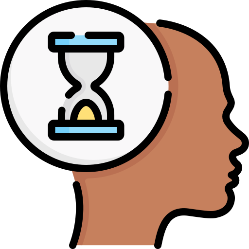
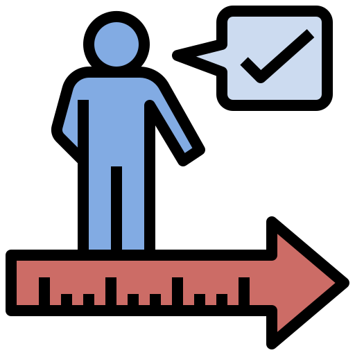

Max!me SAUNOT
Elève du BTS Services Informatique aux Organisations chez ITIS Formation à Evry-Courcouronnes
Qui suis-je ?
Bonjour et bienvenue sur mon site web personnel ! Je m'appelle Maxime SAUNOT, je suis actuellement étudiant en 2ème année chez ITIS Formation à Evry-Courcouronnes afin de préparer un BTS SIO (Services Informatique aux Organisations) option SLAM (Solutions Logicielles et Applications Métiers). Je me donne tous les moyens afin d'atteindre les objectifs qui me sont donnés qu'ils s'agissent d'objectifs professionnels comme personnels.
Je souhaiterais devenir "Developpeur Web" !
Afin d'y parvenir je souhaiterais continuer mes études dans une licence profesionnels ou dans un BUT (Bachelor Universitaire de technologie) et je réflechi encore à aller en école d'Ingénieur. Le mieux serai de trouver une école qui propose une formation en alternance et si possible dans la ville de Toulouse ou dans ses alentours.
Website : www.maxime-saunot.fr
Téléphone : +33(0)7 82 76 68 84
Email : maximecontact@gmail.com
Diplôme : BAC général spécialités
Mathématiques et Sciences de l'Ingénieur
Mes caractéristiques :
-

curieux
-

patient
-

sérieux
-

créatif
Mes langages informatiques :
Je suis aussi capable d'utiliser :
Quel est mon parcours ?
Aujourd'hui
Qu'est-ce qu'est le BTS SIO ?
Présentation globale
Le BTS SIO forme de futurs professionnels de l’informatique à la mise en place de solutions informatiques au sein des organisations (entreprises, administrations, PME, etc.), en tant que consultant d’une SSII (société de services d’ingénierie informatique), d’une société éditrice de logiciels ou d’une société de conseils.
- Le BTS Services Informatiques aux Organisations est un diplôme recconu par l'état de niveau BAC+2.
- Il remplace depuis Septembre 2011, l'ancien BTS IG (Informatique de gestion).
- En effet, cette nouvelle formule répond aux attentes de la profession en matière de qualification.
- Le programme a évolué en fonction de la place et du rôle des TIC (Technologies de l'Information et de la Communication).
- Et propose deux spécialités bien distinctes : Le BTS SIO Option SISR et le BTS SIO Option SLAM.
Matières générales enseignées
Enseignement général du BTS SIO
- Culture générale et expression
- Expression et communication en langue anglaise
- Mathématiques pour l’informatique
- Économie, management et droit de l’informatique
Enseignement professionnel du BTS SIO
- Supervision et QOS (quality of services)
- Mettre en place le cloud
- Installation, configuration et maintenance de serveurs Windows et Linux
- Mettre en place des infrastructures systèmes et réseaux (haute disponibilité, équilibrage des charges, messagerie, VLAN, VPN, Proxy, pare-feu, serveur WEB, cloud computing, xchange et ZIMBRA)
- Veille technologique
- Cybersécurité
- Création, conception site internet, PHP, HTML, CSS, JAVASCRIPT (application légère)
- Application mobile
- Utilisation framework (Symfony 5, NodeJS)
- Conception et administration des Bases de données
- Veille technologique
- Cybersécurité
Quels sont mes projets ?
Projets personnels
Qu'est-ce qu'une veille technologique ?
La veille technologique, élément de la veille stratégique, consiste à
surveiller les évolutions techniques, les innovations dans un secteur
d’activité donnée. La veille technologique comprend notamment la
surveillance, la collecte, le partage et la diffusion d’information
permettant d’anticiper ou de s’informer sur des changements en matière
de recherche, développement, brevet, lancement de nouveaux produits,
matériaux, processus, concepts, innovation de fabrication, etc….
Cela a pour but d’évaluer l’impact sur l’environnement et
l’organisation.
Le but de cette veille technologique:
- Être au courant des dernières nouvelles des mises à jour de sécurité de NodeJs
- Acquérir des connaissances sur la nouvelle technologie Blockchain qui va être appliquée dans de nombreux domaines dans un avenir proche.
Mes veilles technologique
- L'I.A.
Pourquoi les avoir choisis ?
- L'I.A. pour blabla
Outils utilisés
Pour faciliter mon suivi des informations concernant les sujets choisis,
j'utilise la fonction Google Alert et l'application Feedly qui est
installée sur mon portable mobile avec des mots clés bien sélectionnés
afin de filtrer efficacement les informations les plus pertinentes et
les plus récentes.
Instagram, YouTube, Google alerte, Podcast
Qu'est-ce qu'un tableau de synthèse ?
Un tableau de synthèse est un outil utilisé pour résumer et présenter de manière claire et concise des informations importantes relatives à un projet informatique. Ce tableau permet de visualiser rapidement les éléments clés d'un projet, de prendre des décisions éclairées et de communiquer efficacement avec les parties prenantes. L'objectif de ce tableau de synthèse est de fournir une vue d'ensemble claire et rapide du projet, permettant aux membres de l'équipe, aux responsables et aux autres parties prenantes de comprendre l'état d'avancement, les défis potentiels et les prochaines étapes. Cela facilite la gestion efficace du projet et la prise de décisions informées.